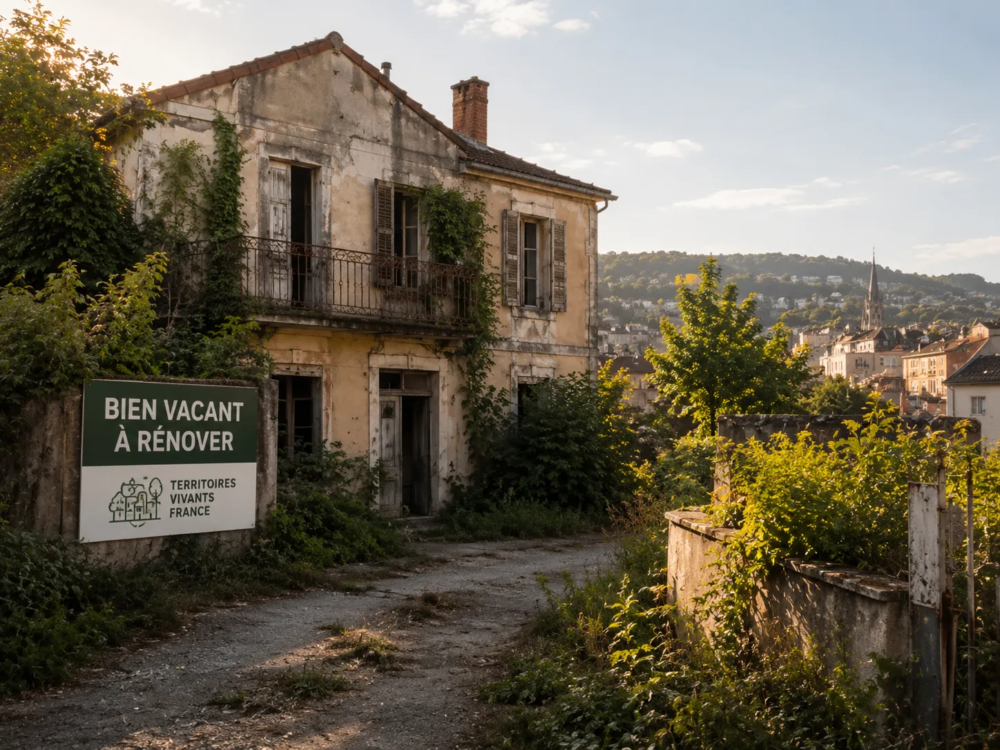

Logements vacants
Maisons, appartements, immeubles et copropriétés pouvant faire l'objet d'une étude de remise en usage.
DécouvrirPropriétaires
Logement, local commercial, bâtiment ou terrain : chaque bien possède une histoire, un potentiel et des enjeux qui lui sont propres.
L'Agence Territoriale de Revitalisation Immobilière accompagne les propriétaires qui souhaitent comprendre la situation de leur bien, étudier les possibilités de valorisation et construire un projet adapté à leurs objectifs.
Pourquoi faire appel à l'Agence ?
Un bien vacant peut rapidement entraîner des coûts, une dégradation du patrimoine ou une perte d'attractivité pour son environnement.
Notre rôle est de vous accompagner dans l'analyse de votre situation et de vous aider à identifier les solutions les plus adaptées à votre projet, en mobilisant les partenaires compétents lorsque cela est nécessaire.
Biens concernés
Maisons, appartements, immeubles et copropriétés pouvant faire l'objet d'une étude de remise en usage.
Découvrir
Locaux commerciaux, boutiques, rez-de-chaussée actifs et cellules vacantes en centre-ville ou quartier.
Découvrir
Bureaux, ateliers, bâtiments d'activité ou bâtiments inutilisés nécessitant une orientation claire.
Découvrir
Terrains constructibles, friches urbaines et anciens sites d'activité à qualifier avant toute décision.
Découvrir
Difficultés fréquentes
Notre accompagnement
Solutions étudiées
Étudier les conditions d'une remise en état, dans un cadre adapté au bien et aux choix du propriétaire.
En savoir plusIdentifier un nouvel usage possible pour un local commercial, un rez-de-chaussée ou un bâtiment vacant.
En savoir plus
Explorer, lorsque le contexte le permet, une utilisation temporaire encadrée par une convention adaptée.
En savoir plusComprendre le potentiel d'un terrain, d'une friche ou d'un site vacant avant de décider de la suite.
En savoir plusLes solutions proposées dépendent toujours des caractéristiques du bien, des choix du propriétaire et du cadre réglementaire applicable.
Aides et dispositifs
Certaines opérations peuvent, selon leur nature et les critères d'éligibilité, bénéficier de dispositifs d'accompagnement ou d'aides publiques. L'Agence vous informe sur les dispositifs existants et vous oriente vers les organismes compétents lorsque cela est pertinent.
Engagements
Comprendre votre situation avant de proposer une orientation.
Présenter clairement les limites, les étapes et les suites possibles.
Conserver une trace claire de l'avancement de votre dossier.
Vos décisions de propriétaire restent au centre du parcours.
Mobiliser les bons interlocuteurs lorsque le dossier le justifie.
Aucune aide, rénovation ou acceptation n'est présentée comme automatique.
Cadre immobilier
TVF peut recueillir une demande, analyser les informations transmises, orienter le propriétaire, proposer un cadre de convention, rechercher des partenaires et suivre le dossier.
Les activités réglementées, notamment transaction, gestion locative, mandat, perception de fonds, diagnostics obligatoires ou travaux soumis à qualification, relèvent des professionnels habilités lorsque le cadre l'exige.
Conditions
La gratuité, le coût, la mission, les responsabilités et les suites possibles sont précisés avant toute intervention. Une demande peut être complétée, orientée ou classée sans suite.
Voir les pièces utilesQuestions fréquentes
Tout propriétaire ou représentant habilité d'un bien concerné peut transmettre une demande.
Non. Vous restez libre de poursuivre ou non votre projet à chaque étape.
Oui. L'étude de votre dossier ne modifie pas vos droits de propriété.
Les pièces dépendent de la nature du bien, de votre qualité à agir et du projet envisagé.
Déclarer un bien
Déposez votre demande en ligne ou prenez rendez-vous avec un chargé de mission.
Contact propriétaire
Vous pouvez appeler, envoyer un message ou transmettre votre demande depuis le formulaire de contact.